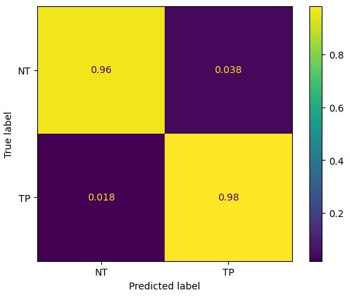
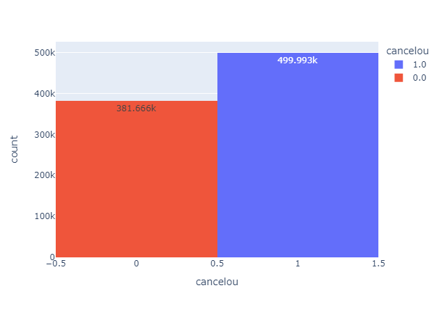
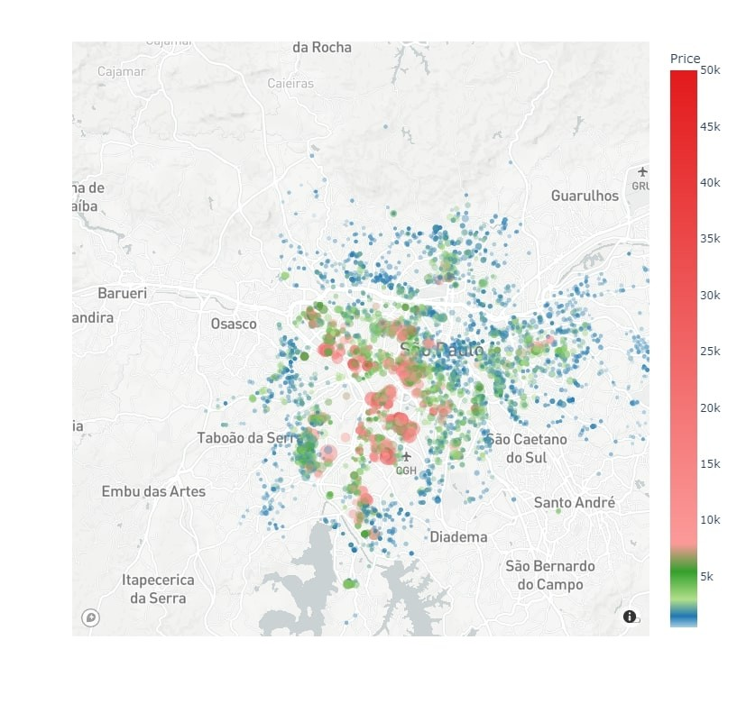

Education
Bachelor in Computer Science | Gran University (2023 - 2027)
Data Science & Analytics | Hashtag Treinamentos (2024 - Present)
Data Science Bootcamp | Datacamp (2024 - Present)
Computer Science Student, Full Stack Developer, Data Scientist, Data Analyst, Data Engineer and ML Engineer.
Bachelor in Computer Science | Gran University (2023 - 2027)
Data Science & Analytics | Hashtag Treinamentos (2024 - Present)
Data Science Bootcamp | Datacamp (2024 - Present)
May 2024, Nov 2024
Jacarepaguá, Rio de Janeiro, RJ, Brazil
Dec 2022, Jan 2023
Jacarepaguá, Rio de Janeiro, RJ, Brazil
Developed a machine learning model to identify the presence of breast cancer on patients using microRNA expression data.
Analyzed customer churn data to provide actionable insights for retention strategies.
Predicted rental prices based on property features using regression models.
Built a predictive model to assess customer creditworthiness and minimize financial risk.